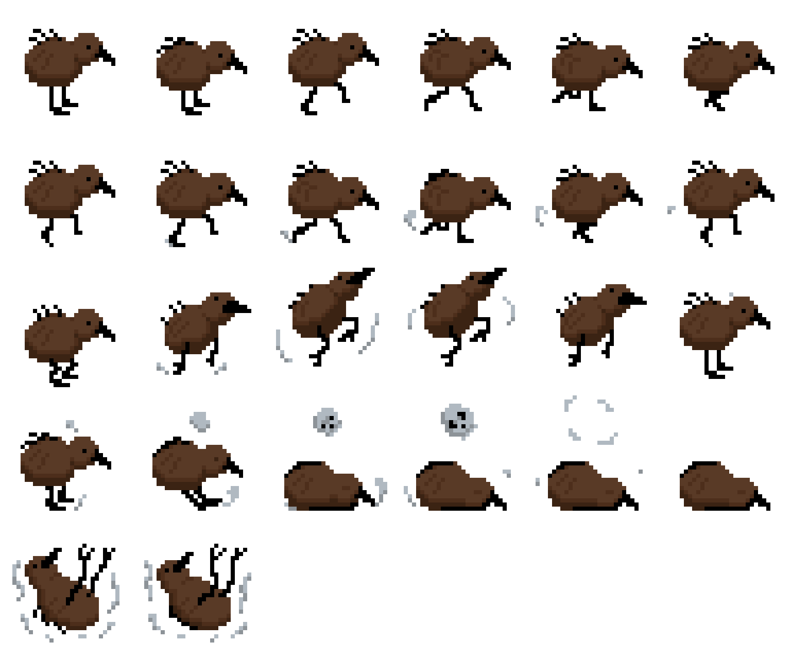

Pixel Art is an artstyle most commonly associated with retro video games such as Super Mario Bros., Donkey Kong, Sonic and Pokemon, this is due to the small amount of pixels being able to be shown on video game consoles during the era these games were released. Nowadays Pixel Art is no longer just a means to work around limitations in technology but an artistic movement for both some modern video games such as Terraria, Undertale and Stardew Valley, and also art in general.
for most up and coming artists and game designers there are various ways one can create pixel art such as:
But for one to take is a step further and go from artist to game designer, they must also understand Sprite Sheets.
Sprite sheets are a collection of individual animation frames compiled into a single image file. These frames typically represent various states or movements of a character, object, or visual element in a game. By grouping all the frames into one image, sprite sheets help optimize performance and reduce memory usage during game development. When imported into game engines like Unity, the sprite sheet can be sliced or separated back into its original frames. These frames are then used to create smooth and efficient animations, serving as the foundation for bringing characters and objects to life in video games.
